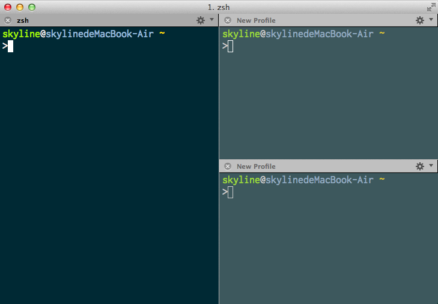
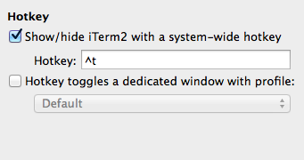
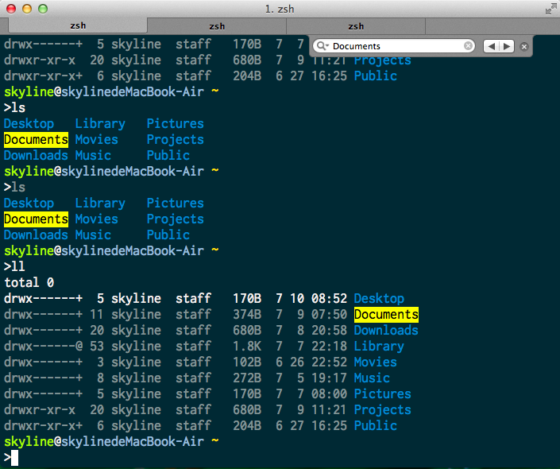
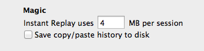
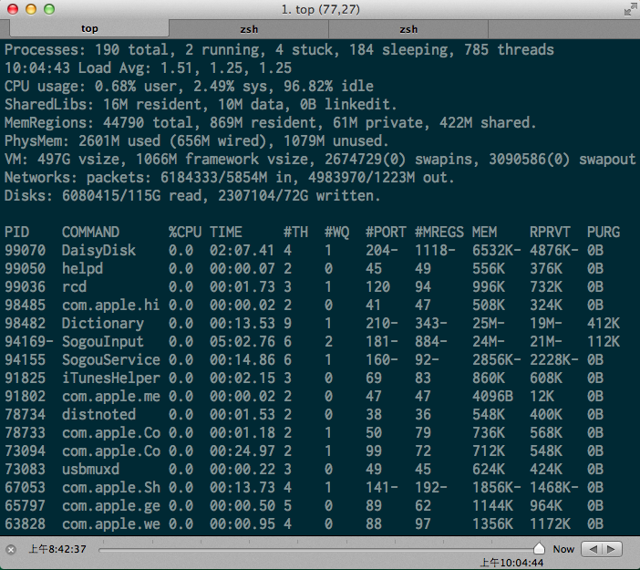

iTerm2新手技巧
以前用Linux时只用过Gnome Terminal之类的终端模拟器，很喜欢它的标签页功能，觉得对工作效率提升特别有帮助。当时感觉像Guake那种下拉式终端，同时还支持标签页等功能，已经很炫酷了。直到我遇见了iTerm2，不夸张的说，我真的被它强大的功能震惊了。这货简直把终端的玩法提升到了一个新高度。废话少说，来看看它有哪些给力的使用技巧。
快捷键
窗口操作
- 新建窗口：Command + N
- 关闭窗口：Shift + Command + W
- 窗口之间切换
- 前一个窗口： Command + `
- 后一个窗口：Command + ~
- 进入窗口1，2，3...： Option + Command + 窗口编号
标签页操作
- 新建标签页：Command + T
- 关闭标签页： Command + W
- 标签页之间切换
- 前一个标签页： Command + 左方向键，Shift + Command + [
- 后一个标签页： Command + 右方向键，Shitf + Command + ]
- 进入标签页1，2，3...： Command + 标签页编号
- Expose 标签页： Option + Command + E（将标签页打撒到全屏，并可以全局搜索所有的标签页）
面板操作
- 垂直分割：Command + D
- 水平分割： Shift + Command + D
- 面板之间切换
- 前一个面板： Command + [
- 后一个面板： Command + ]
- 切换到上/下/左/右面板：Option + Command + 上下左右方向键
有了面板分割功能，你可以把终端搞成这样：

看起来很像是Vim的分屏功能，但是使用范围更广了。
其他操作
- 支持自定义全局快捷键用于显示和隐藏iTerm2
Preference -> Keys

- 进入和退出全屏：Command + Enter
- 查看当前终端中光标的位置：Command + /
- 命令自动补全：Command + ;（很少用这个，还是感觉Zsh的补全更好用）
- 开启和关闭背景半透明：Command + u
- 清屏（重置当前终端）：Command + r
特色功能
文本选取
文本选取有使用鼠标和不使用鼠标两种方式。
使用鼠标：默认情况下，选取的文字会自动复制到剪切板，可以使用以下方式进行文本选取：
- 常见的点击并拖拽方式
- 双击选取整个单词
- 三击选取整行
- 选取某一部分，按住Shift，再点击某处，可以选取整个矩形内的文本（类似Windows下按住Shift可以批量选取图标）
- 按住Command + Option，可以用鼠标画出一个矩形，用类似截图的方式选取文本
另外，还可以使用鼠标完成以下操作：
- 按住Command然后点击某个URL，会在浏览器中打开这个URL，点击某个文件夹，会在Finder里打开这个文件夹（再也不用open . 啦），点击某个文件名，会打开这个文件（文本文件支持MacVim，TextMate和BBEdit，如果后面跟随一个冒号和行号，文件会在行号处打开，其它格式的文件似乎不能调用默认程序打开）
- 选取文本之后，按住Command 同时拖动文本，可以将文本粘贴到目标位置（Drag and Drop）
- 鼠标中键粘贴（这个太感人了，一下子找回Linux的感觉了）
不使用鼠标：(这种方式最多只能选取一行文本) 使用 Command + f，会呼出一个搜索框，可以在当前面板中进行搜索，输入想要选取的部分内容，输入过程中，按Tab可以将选取部分向右扩展，按Shift + Tab向左扩展，按回车转到下一个匹配位置。使用Tab或Shift+Tab扩展得到想要的内容之后，选取内容会自动复制到剪切板，再次按Command + f隐藏搜索框。

此外，点击搜索框最左边的放大镜按钮，可以选择搜索匹配方式（忽略大小写和正则表达式）。
位置书签
在当前会话中按Command + Shift + m可以保存当前位置，之后可以按Command + Shift + j跳回这个位置。
粘贴历史
使用Command + Shift + h 可以呼出粘贴历史，支持模糊检索。还可以设置将粘贴历史保存在磁盘上（Preferences -> General）

即时回放
使用 Command + Opt + b 打开即时回放，按Esc退出。即时回放可以记录终端输出的状态，让你“穿越时间”查看终端内容。默认每个会话最多储存4MB的内容，可以在设置中更改（Preferences -> Genernal -> Instant Replay）。

窗口状态
通过 Window -> Save Window Arrangement 可以保存当前窗口状态的快照，包括打开的窗口，标签页和面板。通过 Window -> Restore Window Arrangement 还原。还可以在 Preferences -> General -> Open saved window arrangement 中设置在启动iTerm2时自动恢复窗口状态
总结
看了这么多，想必你对iTerm2的强大功能已经有所了解。iTerm2的功能远不是一篇文章能介绍完的，有兴趣的可以去查看它的官方文档。我也是一边学习，一边完成了这篇博文。
外有iTerm2强大的会话管理，内有Zsh各种爽快的跳转和补全，妈妈再也不用担心我的终端不好用啦！